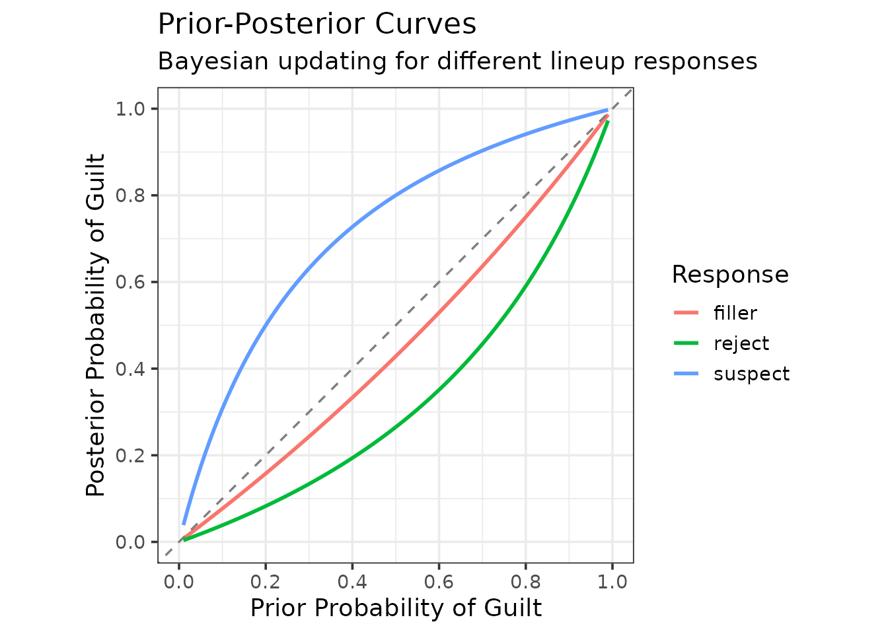
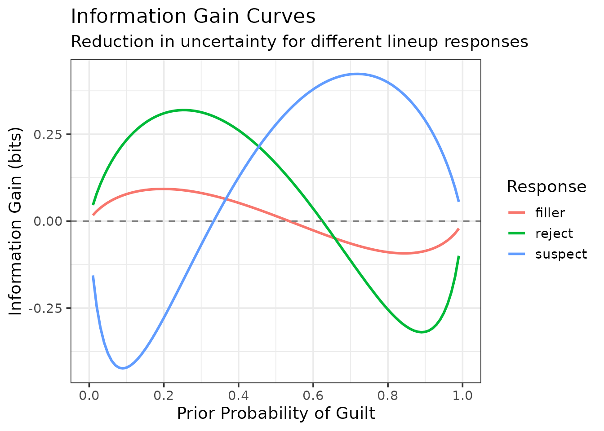
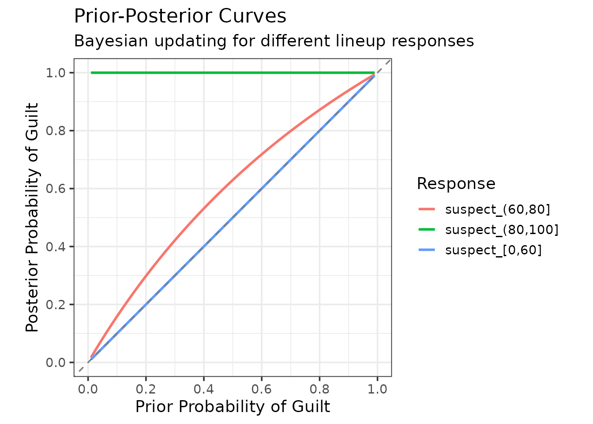
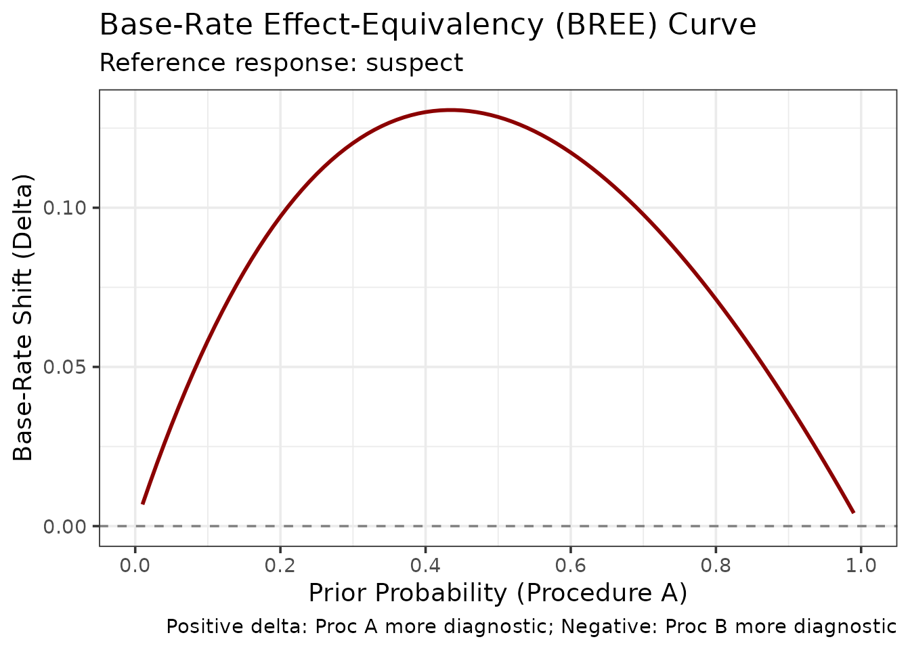
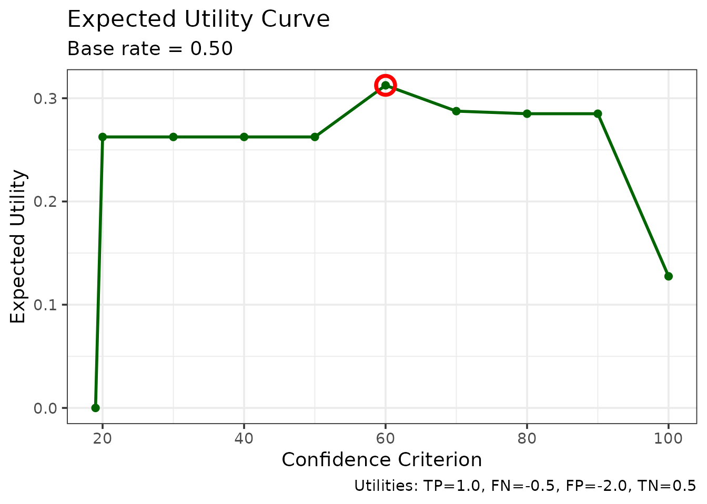
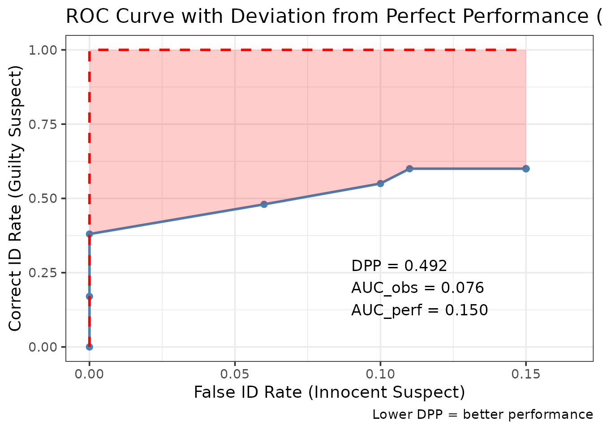
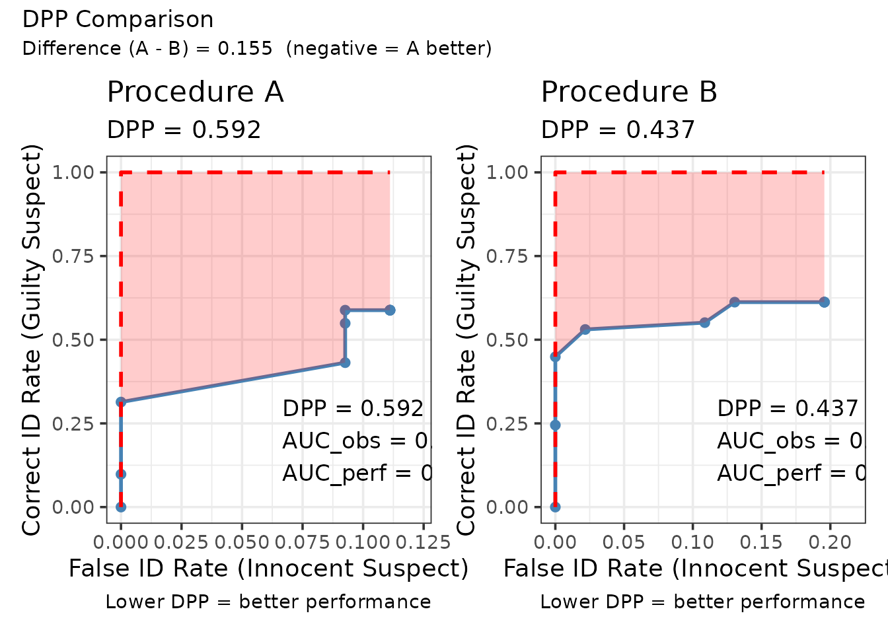
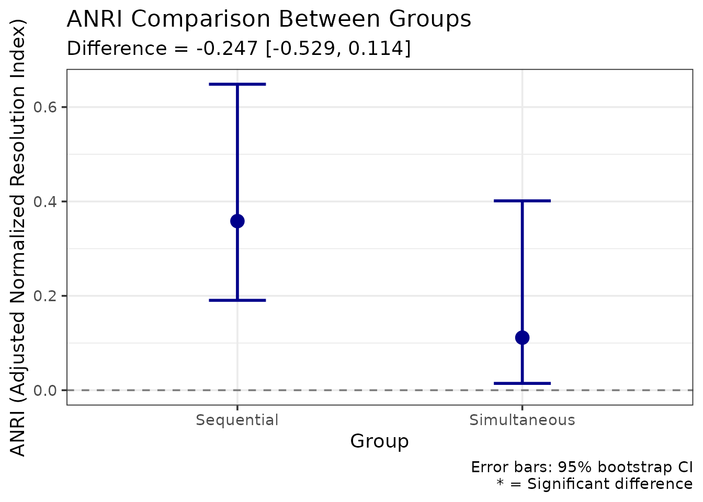
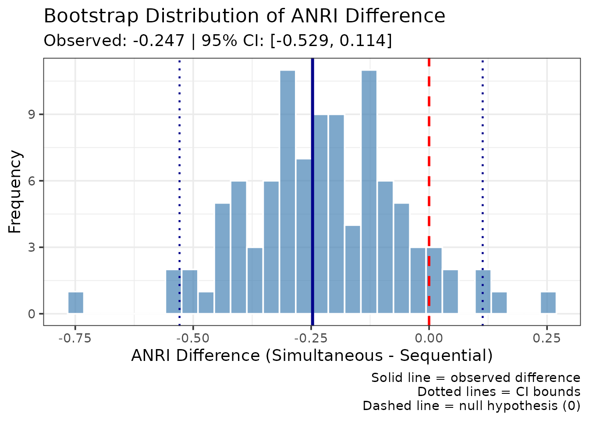

Calibration and Decision Analysis
Advanced Methods for Evaluating Eyewitness Identification Performance
Colin G. Tredoux
Tamsyn M. Naylor
2026-08-10
Source:vignettes/calibration_decision_analysis.Rmd
calibration_decision_analysis.RmdIntroduction
This vignette demonstrates five advanced statistical methods for analyzing eyewitness identification data in r4lineups:
- Calibration Analysis - Assessing confidence-accuracy correspondence
- Bayesian Information-Gain Curves - Evaluating diagnostic value of evidence
- Expected Utility Analysis - Decision-theoretic evaluation with cost/benefit tradeoffs
- Deviation from Perfect Performance (DPP) - ROC-based truncation-robust metric
- ANRI - Bias-corrected resolution index with bootstrap inference
These methods complement the traditional lineup fairness measures by providing sophisticated analyses of identification accuracy, confidence calibration, and decision-making utility.
Data Format
All methods in this vignette require a dataframe with the following columns:
-
target_present: Logical. TRUE if the guilty suspect is in the lineup -
identification: Character. “suspect”, “filler”, or “reject” -
confidence: Numeric. Confidence rating (any scale)
We’ll use the built-in lineup_example dataset
throughout.
library(r4lineups)
data(lineup_example)
# Examine the data structure
head(lineup_example)
target_present identification confidence
1 TRUE suspect 90
2 TRUE reject 50
3 TRUE suspect 90
4 TRUE filler 50
5 TRUE filler 50
6 TRUE suspect 90
str(lineup_example)
'data.frame': 200 obs. of 3 variables:
$ target_present: logi TRUE TRUE TRUE TRUE TRUE TRUE ...
$ identification: chr "suspect" "reject" "suspect" "filler" ...
$ confidence : num 90 50 90 50 50 90 70 40 90 60 ...1. Calibration Analysis
Calibration measures how well confidence judgments correspond to accuracy. Perfect calibration means that when witnesses express X% confidence, they are correct X% of the time.
Basic Calibration
# Compute calibration with binned confidence
cal_result <- make_calibration(
lineup_example,
confidence_bins = c(0, 60, 80, 100),
choosers_only = TRUE # Analyze only suspect identifications
)
print(cal_result)
=== Lineup Calibration Analysis ===
Analysis type: Choosers only (suspect IDs)
Total N: 75
Calibration Statistics:
C (Calibration): 0.0081
O/U (Over/Under): +0.0267
NRI (Resolution): 0.2670
Overall Performance:
Mean Accuracy: 0.800
Mean Confidence: 0.827
Calibration Data by Bin:
[38;5;246m# A tibble: 3 × 7
[39m
bin n mean_confidence accuracy n_correct n_incorrect
[3m
[38;5;246m<chr>
[39m
[23m
[3m
[38;5;246m<dbl>
[39m
[23m
[3m
[38;5;246m<dbl>
[39m
[23m
[3m
[38;5;246m<dbl>
[39m
[23m
[3m
[38;5;246m<dbl>
[39m
[23m
[3m
[38;5;246m<dbl>
[39m
[23m
[38;5;250m1
[39m [0,60] 10 56 0.5 5 5
[38;5;250m2
[39m (60,80] 27 75.9 0.630 17 10
[38;5;250m3
[39m (80,100] 38 94.5 1 38 0
[38;5;246m# ℹ 1 more variable: mean_confidence_prop <dbl>
[39m
Plot available in $plotThe output provides three key statistics:
- C statistic: Overall calibration quality (0 = perfect, higher = worse)
- O/U (Over/Under confidence): Positive = overconfident, Negative = underconfident
- NRI (Normalized Resolution Index): Ability to discriminate accuracy levels with confidence (higher = better)
Interpreting the Calibration Plot
The calibration plot shows:
- Diagonal line: Perfect calibration
- Points above diagonal: Underconfident (accuracy exceeds confidence)
- Points below diagonal: Overconfident (confidence exceeds accuracy)
- Point size: Sample size in each bin
# The plot is automatically displayed, but you can save it:
ggsave("calibration_plot.png", cal_result$plot, width = 8, height = 6)Calibration by Condition
Compare calibration across experimental conditions:
# Add a grouping variable (for demonstration)
lineup_example$procedure <- sample(
c("Simultaneous", "Sequential"),
nrow(lineup_example),
replace = TRUE
)
# Compute calibration by condition
cal_by_cond <- make_calibration_by_condition(
lineup_example,
condition_var = "procedure",
confidence_bins = c(0, 60, 80, 100)
)
print(cal_by_cond)
$by_condition
$by_condition$Simultaneous
$by_condition$Simultaneous$calibration_data
[38;5;246m# A tibble: 3 × 7
[39m
bin n mean_confidence accuracy n_correct n_incorrect
[3m
[38;5;246m<chr>
[39m
[23m
[3m
[38;5;246m<dbl>
[39m
[23m
[3m
[38;5;246m<dbl>
[39m
[23m
[3m
[38;5;246m<dbl>
[39m
[23m
[3m
[38;5;246m<dbl>
[39m
[23m
[3m
[38;5;246m<dbl>
[39m
[23m
[38;5;250m1
[39m [0,60] 3 56.7 0.667 2 1
[38;5;250m2
[39m (60,80] 17 76.5 0.706 12 5
[38;5;250m3
[39m (80,100] 16 93.1 1 16 0
[38;5;246m# ℹ 1 more variable: mean_confidence_prop <dbl>
[39m
$by_condition$Simultaneous$C
[1] 0.004568015
$by_condition$Simultaneous$OU
[1] -0.01111111
$by_condition$Simultaneous$NRI
[1] 0.1607843
$by_condition$Simultaneous$overall_accuracy
[1] 0.8333333
$by_condition$Simultaneous$overall_confidence
[1] 0.8222222
$by_condition$Simultaneous$n_total
[1] 36
$by_condition$Simultaneous$choosers_only
[1] TRUE
$by_condition$Simultaneous$confidence_scale
[1] 100
$by_condition$Simultaneous$innocent_suspect_method
[1] "designated"
$by_condition$Sequential
$by_condition$Sequential$calibration_data
[38;5;246m# A tibble: 3 × 7
[39m
bin n mean_confidence accuracy n_correct n_incorrect
[3m
[38;5;246m<chr>
[39m
[23m
[3m
[38;5;246m<dbl>
[39m
[23m
[3m
[38;5;246m<dbl>
[39m
[23m
[3m
[38;5;246m<dbl>
[39m
[23m
[3m
[38;5;246m<dbl>
[39m
[23m
[3m
[38;5;246m<dbl>
[39m
[23m
[38;5;250m1
[39m [0,60] 7 55.7 0.429 3 4
[38;5;250m2
[39m (60,80] 10 75 0.5 5 5
[38;5;250m3
[39m (80,100] 22 95.5 1 22 0
[38;5;246m# ℹ 1 more variable: mean_confidence_prop <dbl>
[39m
$by_condition$Sequential$C
[1] 0.02015818
$by_condition$Sequential$OU
[1] 0.06153846
$by_condition$Sequential$NRI
[1] 0.3912698
$by_condition$Sequential$overall_accuracy
[1] 0.7692308
$by_condition$Sequential$overall_confidence
[1] 0.8307692
$by_condition$Sequential$n_total
[1] 39
$by_condition$Sequential$choosers_only
[1] TRUE
$by_condition$Sequential$confidence_scale
[1] 100
$by_condition$Sequential$innocent_suspect_method
[1] "designated"
$condition_summary
[38;5;246m# A tibble: 2 × 7
[39m
condition n C OU NRI overall_accuracy overall_confidence
[38;5;250m*
[39m
[3m
[38;5;246m<chr>
[39m
[23m
[3m
[38;5;246m<dbl>
[39m
[23m
[3m
[38;5;246m<dbl>
[39m
[23m
[3m
[38;5;246m<dbl>
[39m
[23m
[3m
[38;5;246m<dbl>
[39m
[23m
[3m
[38;5;246m<dbl>
[39m
[23m
[3m
[38;5;246m<dbl>
[39m
[23m
[38;5;250m1
[39m Simultaneous 36 0.004
[4m5
[24m
[4m7
[24m -
[31m0
[39m
[31m.
[39m
[31m0
[39m
[31m11
[4m1
[24m
[39m 0.161 0.833 0.822
[38;5;250m2
[39m Sequential 39 0.020
[4m2
[24m 0.061
[4m5
[24m 0.391 0.769 0.831
$condition_vars
[1] "procedure"
# Plot comparison
cal_by_cond$plot
NULL2. Bayesian Information-Gain Analysis
Bayesian analysis evaluates how much an identification response changes our belief about guilt, quantified as information gain (reduction in uncertainty).
Prior-Posterior Curves
# Compute Bayesian curves for simple responses
bayes_result <- make_bayes_curves(
lineup_example,
response_categories = "simple", # "suspect", "filler", "reject"
prior_grid = seq(0.01, 0.99, 0.01)
)
print(bayes_result)
$curves
[38;5;246m# A tibble: 297 × 4
[39m
response prior posterior information_gain
[3m
[38;5;246m<chr>
[39m
[23m
[3m
[38;5;246m<dbl>
[39m
[23m
[3m
[38;5;246m<dbl>
[39m
[23m
[3m
[38;5;246m<dbl>
[39m
[23m
[38;5;250m 1
[39m filler 0.01 0.007
[4m5
[24m
[4m2
[24m 0.016
[4m9
[24m
[38;5;250m 2
[39m filler 0.02 0.015
[4m1
[24m 0.028
[4m6
[24m
[38;5;250m 3
[39m filler 0.03 0.022
[4m7
[24m 0.038
[4m2
[24m
[38;5;250m 4
[39m filler 0.04 0.030
[4m3
[24m 0.046
[4m4
[24m
[38;5;250m 5
[39m filler 0.05 0.038
[4m0
[24m 0.053
[4m5
[24m
[38;5;250m 6
[39m filler 0.06 0.045
[4m7
[24m 0.059
[4m7
[24m
[38;5;250m 7
[39m filler 0.07 0.053
[4m4
[24m 0.065
[4m1
[24m
[38;5;250m 8
[39m filler 0.08 0.061
[4m2
[24m 0.069
[4m9
[24m
[38;5;250m 9
[39m filler 0.09 0.069
[4m1
[24m 0.074
[4m1
[24m
[38;5;250m10
[39m filler 0.1 0.076
[4m9
[24m 0.077
[4m8
[24m
[38;5;246m# ℹ 287 more rows
[39m
$likelihoods
[38;5;246m# A tibble: 3 × 5
[39m
response p_x_given_guilty p_x_given_innocent n_guilty n_innocent
[3m
[38;5;246m<chr>
[39m
[23m
[3m
[38;5;246m<dbl>
[39m
[23m
[3m
[38;5;246m<dbl>
[39m
[23m
[3m
[38;5;246m<int>
[39m
[23m
[3m
[38;5;246m<dbl>
[39m
[23m
[38;5;250m1
[39m filler 0.18 0.24 18 24
[38;5;250m2
[39m reject 0.22 0.61 22 61
[38;5;250m3
[39m suspect 0.6 0.15 60 15
$response_counts
[38;5;246m# A tibble: 3 × 3
[39m
response n_guilty n_innocent
[3m
[38;5;246m<chr>
[39m
[23m
[3m
[38;5;246m<int>
[39m
[23m
[3m
[38;5;246m<dbl>
[39m
[23m
[38;5;250m1
[39m filler 18 24
[38;5;250m2
[39m reject 22 61
[38;5;250m3
[39m suspect 60 15
$n_guilty
[1] 100
$n_innocent
[1] 100
$response_categories
[1] "simple"
$lineup_size
[1] 6
$innocent_suspect_method
[1] "designated"
# Plot prior-posterior relationships
plot_bayes_prior_posterior(bayes_result)
The plot shows how each response type updates prior belief:
- Lines above diagonal: Evidence increases guilt belief (diagnostic of guilt)
- Lines below diagonal: Evidence decreases guilt belief (diagnostic of innocence)
- Steeper slopes: More diagnostic evidence
Information Gain
Information gain quantifies uncertainty reduction:
# Plot information gain
plot_bayes_information_gain(bayes_result)
Interpretation:
- Positive values: Response reduces uncertainty (diagnostic)
- Negative values: Response increases uncertainty (misleading)
- Higher magnitude: Stronger diagnostic value
Confidence-Based Bayesian Analysis
Analyze by confidence level:
bayes_conf <- make_bayes_curves(
lineup_example,
response_categories = "confidence",
confidence_bins = c(0, 60, 80, 100)
)
# Get suspect responses only
suspect_responses <- grep("^suspect_", unique(bayes_conf$curves$response), value = TRUE)
plot_bayes_prior_posterior(bayes_conf, selected_responses = suspect_responses)
Base-Rate Equivalency of Evidence (BREE)
BREE curves compare the diagnostic value of two procedures:
# Create two procedure datasets (for demonstration)
data_proc_a <- lineup_example[lineup_example$procedure == "Simultaneous", ]
data_proc_b <- lineup_example[lineup_example$procedure == "Sequential", ]
# Compute BREE curve for suspect identifications
bree_result <- make_bree_curve(
data_proc_a,
data_proc_b,
reference_response = "suspect"
)
plot_bree(bree_result)
The BREE curve shows equivalent base rates for equal posterior probabilities. Points above the diagonal indicate Procedure A requires higher base rates to achieve the same posterior as Procedure B.
3. Expected Utility Analysis
Expected utility analysis evaluates identification procedures considering costs and benefits of different outcomes.
Define Utility Matrix
# Define costs/benefits (on same scale)
utility_matrix <- c(
tp = 1.0, # True positive (correct suspect ID): Benefit
fn = -0.5, # False negative (reject/filler ID when guilty): Cost
fp = -2.0, # False positive (suspect ID when innocent): Major cost
tn = 0.5 # True negative (reject/filler ID when innocent): Benefit
)Compute Utility Curves
# Compute expected utility across confidence criteria
util_result <- make_utility_curves(
lineup_example,
base_rate = 0.5, # Assume 50% guilty suspects
utility_matrix = utility_matrix,
lineup_size = 6
)
print(util_result)
$utility_data
[38;5;246m# A tibble: 10 × 6
[39m
criterion hit_rate false_alarm_rate expected_utility n_ids_tp n_ids_ta
[3m
[38;5;246m<dbl>
[39m
[23m
[3m
[38;5;246m<dbl>
[39m
[23m
[3m
[38;5;246m<dbl>
[39m
[23m
[3m
[38;5;246m<dbl>
[39m
[23m
[3m
[38;5;246m<dbl>
[39m
[23m
[3m
[38;5;246m<dbl>
[39m
[23m
[38;5;250m 1
[39m 100 0.17 0 0.128 17 0
[38;5;250m 2
[39m 90 0.38 0 0.285 38 0
[38;5;250m 3
[39m 80 0.48 0.06 0.285 48 6
[38;5;250m 4
[39m 70 0.55 0.1 0.288 55 10
[38;5;250m 5
[39m 60 0.6 0.11 0.312 60 11
[38;5;250m 6
[39m 50 0.6 0.15 0.262 60 15
[38;5;250m 7
[39m 40 0.6 0.15 0.262 60 15
[38;5;250m 8
[39m 30 0.6 0.15 0.262 60 15
[38;5;250m 9
[39m 20 0.6 0.15 0.262 60 15
[38;5;250m10
[39m 19 0 0 0 0 0
$max_utility
$max_utility$expected_utility
tp
0.3125
$max_utility$criterion
[1] 60
$max_utility$hit_rate
[1] 0.6
$max_utility$false_alarm_rate
[1] 0.11
$avg_utility
[1] 0.2608333
$utility_all_ids
tp
0.2625
$base_rate
[1] 0.5
$utility_matrix
tp fn fp tn
1.0 -0.5 -2.0 0.5
$n_target_present
[1] 100
$n_target_absent
[1] 100
$innocent_suspect_method
[1] "designated"
$criteria
[1] "confidence"
# Plot utility curves
plot_utility_curves(util_result)
The plot shows:
- Expected utility at each confidence threshold
- Optimal threshold: Maximum utility point
- Comparison with “all identifications” strategy
Compare Procedures
# Compare two procedures (requires datasets from BREE section)
# First compute utility for each procedure separately
util_proc_a <- make_utility_curves(data_proc_a, base_rate = 0.5,
utility_matrix = utility_matrix)
util_proc_b <- make_utility_curves(data_proc_b, base_rate = 0.5,
utility_matrix = utility_matrix)
cat("Procedure A max utility:", round(util_proc_a$max_utility, 3), "\n")
cat("Procedure B max utility:", round(util_proc_b$max_utility, 3), "\n")Sensitivity to Base Rate
Examine how utility depends on base rate:
# Test multiple base rates
base_rates <- c(0.2, 0.5, 0.8)
for (br in base_rates) {
util <- make_utility_curves(lineup_example, base_rate = br,
utility_matrix = utility_matrix)
cat("Base rate:", br, " Max utility:", round(util$max_utility, 3), "\n")
}4. Deviation from Perfect Performance (DPP)
DPP quantifies how far an ROC curve deviates from perfect performance. It’s robust to ROC truncation (missing low-confidence data).
Basic DPP
# Compute DPP
dpp_result <- make_dpp(
lineup_example,
lineup_size = 6
)
print(dpp_result)
$dpp
[1] 0.4923333
$auc_observed
[1] 0.07615
$auc_perfect
[1] 0.15
$auc_gap
[1] 0.07385
$roc_data
[38;5;246m# A tibble: 10 × 5
[39m
confidence correct_id_rate false_id_rate n_correct_ids n_false_ids
[3m
[38;5;246m<dbl>
[39m
[23m
[3m
[38;5;246m<dbl>
[39m
[23m
[3m
[38;5;246m<dbl>
[39m
[23m
[3m
[38;5;246m<dbl>
[39m
[23m
[3m
[38;5;246m<dbl>
[39m
[23m
[38;5;250m 1
[39m 19 0 0 0 0
[38;5;250m 2
[39m 100 0.17 0 17 0
[38;5;250m 3
[39m 90 0.38 0 38 0
[38;5;250m 4
[39m 80 0.48 0.06 48 6
[38;5;250m 5
[39m 70 0.55 0.1 55 10
[38;5;250m 6
[39m 60 0.6 0.11 60 11
[38;5;250m 7
[39m 50 0.6 0.15 60 15
[38;5;250m 8
[39m 40 0.6 0.15 60 15
[38;5;250m 9
[39m 30 0.6 0.15 60 15
[38;5;250m10
[39m 20 0.6 0.15 60 15
$perfect_roc
[38;5;246m# A tibble: 3 × 2
[39m
false_id_rate correct_id_rate
[3m
[38;5;246m<dbl>
[39m
[23m
[3m
[38;5;246m<dbl>
[39m
[23m
[38;5;250m1
[39m 0 0
[38;5;250m2
[39m 0 1
[38;5;250m3
[39m 0.15 1
$max_fa
[1] 0.15
$n_target_present
[1] 100
$n_target_absent
[1] 100
# Plot ROC with perfect performance comparison
plot_dpp(dpp_result)
Interpretation:
- DPP = 0: Perfect performance
- DPP = 1: Chance performance
- DPP < 0: Better than perfect (impossible, indicates error)
The plot shows:
- Black curve: Observed ROC
- Red dashed line: Perfect ROC given the maximum false alarm rate
- Shaded area: Deviation from perfect performance
Compare DPP Between Groups
# Compare procedures (using datasets from BREE section)
dpp_comparison <- compare_dpp(
data_proc_a,
data_proc_b,
lineup_size = 6
)
print(dpp_comparison)
$dpp_a
[1] 0.5915033
$dpp_b
[1] 0.4365079
$dpp_difference
[1] 0.1549953
$dpp_obj_a
$dpp_obj_a$dpp
[1] 0.5915033
$dpp_obj_a$auc_observed
[1] 0.04538853
$dpp_obj_a$auc_perfect
[1] 0.1111111
$dpp_obj_a$auc_gap
[1] 0.06572259
$dpp_obj_a$roc_data
[38;5;246m# A tibble: 10 × 5
[39m
confidence correct_id_rate false_id_rate n_correct_ids n_false_ids
[3m
[38;5;246m<dbl>
[39m
[23m
[3m
[38;5;246m<dbl>
[39m
[23m
[3m
[38;5;246m<dbl>
[39m
[23m
[3m
[38;5;246m<dbl>
[39m
[23m
[3m
[38;5;246m<dbl>
[39m
[23m
[38;5;250m 1
[39m 19 0 0 0 0
[38;5;250m 2
[39m 100 0.098
[4m0
[24m 0 5 0
[38;5;250m 3
[39m 90 0.314 0 16 0
[38;5;250m 4
[39m 80 0.431 0.092
[4m6
[24m 22 5
[38;5;250m 5
[39m 70 0.549 0.092
[4m6
[24m 28 5
[38;5;250m 6
[39m 60 0.588 0.092
[4m6
[24m 30 5
[38;5;250m 7
[39m 50 0.588 0.111 30 6
[38;5;250m 8
[39m 40 0.588 0.111 30 6
[38;5;250m 9
[39m 30 0.588 0.111 30 6
[38;5;250m10
[39m 20 0.588 0.111 30 6
$dpp_obj_a$perfect_roc
[38;5;246m# A tibble: 3 × 2
[39m
false_id_rate correct_id_rate
[3m
[38;5;246m<dbl>
[39m
[23m
[3m
[38;5;246m<dbl>
[39m
[23m
[38;5;250m1
[39m 0 0
[38;5;250m2
[39m 0 1
[38;5;250m3
[39m 0.111 1
$dpp_obj_a$max_fa
[1] 0.1111111
$dpp_obj_a$n_target_present
[1] 51
$dpp_obj_a$n_target_absent
[1] 54
$dpp_obj_b
$dpp_obj_b$dpp
[1] 0.4365079
$dpp_obj_b$auc_observed
[1] 0.1102484
$dpp_obj_b$auc_perfect
[1] 0.1956522
$dpp_obj_b$auc_gap
[1] 0.08540373
$dpp_obj_b$roc_data
[38;5;246m# A tibble: 10 × 5
[39m
confidence correct_id_rate false_id_rate n_correct_ids n_false_ids
[3m
[38;5;246m<dbl>
[39m
[23m
[3m
[38;5;246m<dbl>
[39m
[23m
[3m
[38;5;246m<dbl>
[39m
[23m
[3m
[38;5;246m<dbl>
[39m
[23m
[3m
[38;5;246m<dbl>
[39m
[23m
[38;5;250m 1
[39m 19 0 0 0 0
[38;5;250m 2
[39m 100 0.245 0 12 0
[38;5;250m 3
[39m 90 0.449 0 22 0
[38;5;250m 4
[39m 80 0.531 0.021
[4m7
[24m 26 1
[38;5;250m 5
[39m 70 0.551 0.109 27 5
[38;5;250m 6
[39m 60 0.612 0.130 30 6
[38;5;250m 7
[39m 50 0.612 0.196 30 9
[38;5;250m 8
[39m 40 0.612 0.196 30 9
[38;5;250m 9
[39m 30 0.612 0.196 30 9
[38;5;250m10
[39m 20 0.612 0.196 30 9
$dpp_obj_b$perfect_roc
[38;5;246m# A tibble: 3 × 2
[39m
false_id_rate correct_id_rate
[3m
[38;5;246m<dbl>
[39m
[23m
[3m
[38;5;246m<dbl>
[39m
[23m
[38;5;250m1
[39m 0 0
[38;5;250m2
[39m 0 1
[38;5;250m3
[39m 0.196 1
$dpp_obj_b$max_fa
[1] 0.1956522
$dpp_obj_b$n_target_present
[1] 49
$dpp_obj_b$n_target_absent
[1] 46
# Plot comparison side-by-side
plot_dpp_comparison(dpp_comparison)
5. ANRI: Adjusted Normalized Resolution Index
ANRI corrects NRI for small-sample bias, making it more appropriate for hypothesis testing and group comparisons.
Basic ANRI
# Compute ANRI
anri_result <- compute_anri(
lineup_example,
confidence_bins = c(0, 60, 80, 100)
)
print(anri_result)
$anri
[1] 0.2468924
$nri
[1] 0.2669753
$n_total
[1] 75
$n_bins
[1] 3
$calibration_data
[38;5;246m# A tibble: 3 × 7
[39m
bin n mean_confidence accuracy n_correct n_incorrect
[3m
[38;5;246m<chr>
[39m
[23m
[3m
[38;5;246m<dbl>
[39m
[23m
[3m
[38;5;246m<dbl>
[39m
[23m
[3m
[38;5;246m<dbl>
[39m
[23m
[3m
[38;5;246m<dbl>
[39m
[23m
[3m
[38;5;246m<dbl>
[39m
[23m
[38;5;250m1
[39m [0,60] 10 56 0.5 5 5
[38;5;250m2
[39m (60,80] 27 75.9 0.630 17 10
[38;5;250m3
[39m (80,100] 38 94.5 1 38 0
[38;5;246m# ℹ 1 more variable: mean_confidence_prop <dbl>
[39m
$overall_accuracy
[1] 0.8
$overall_confidence
[1] 0.8266667
$choosers_only
[1] TRUEANRI is always ≤ NRI because it removes positive bias. The bias correction is larger when:
- Sample size N is small
- Number of bins J is large
- The ratio J/N is high
Bootstrap Confidence Intervals
# Compute ANRI with bootstrap CIs
anri_boot <- bootstrap_anri(
lineup_example,
confidence_bins = c(0, 60, 80, 100),
n_bootstrap = 100, # Use 2000+ for publications
conf_level = 0.95,
seed = 123
)
print(anri_boot)
$anri
[1] 0.2468924
$nri
[1] 0.2669753
$ci_lower
[1] 0.1336482
$ci_upper
[1] 0.434792
$conf_level
[1] 0.95
$n_bootstrap
[1] 100
$n_total
[1] 75
$n_bins
[1] 3
$bootstrap_distribution
[1] 0.2019464 0.3034350 0.3072083 0.3179877 0.2925084 0.1884888 0.1468686
[8] 0.2153453 0.2322336 0.4757909 0.1753476 0.1424745 0.2431463 0.2860713
[15] 0.2436305 0.3512907 0.2693193 0.1994026 0.2825956 0.2667477 0.4167903
[22] 0.1223555 0.2061349 0.2584583 0.1368868 0.2571786 0.3796680 0.4073500
[29] 0.2555721 0.1753218 0.2275254 0.2115198 0.3686154 0.1200437 0.2567247
[36] 0.1653830 0.3184510 0.3166580 0.2153595 0.1336036 0.1850281 0.1990476
[43] 0.3542773 0.2034296 0.2634080 0.2060394 0.2956218 0.1824630 0.2975614
[50] 0.2301549 0.2934045 0.2565297 0.1483901 0.2566574 0.2077511 0.3208007
[57] 0.3585035 0.4071888 0.1449404 0.1732985 0.1513693 0.3188010 0.1684575
[64] 0.4510791 0.2890782 0.2996626 0.2546452 0.2019937 0.1339653 0.2446163
[71] 0.3583638 0.2541258 0.2816561 0.2626944 0.2434397 0.1336976 0.3682799
[78] 0.2460509 0.2724720 0.2537938 0.2764419 0.1915772 0.2291751 0.3160233
[85] 0.2963458 0.2666297 0.2555794 0.2499492 0.2364883 0.3403142 0.1449840
[92] 0.1680805 0.4679251 0.2572603 0.2810696 0.2740634 0.4034659 0.1996165
[99] 0.3244452 0.2351784
cat("\nANRI:", round(anri_boot$anri, 3), "\n")
ANRI: 0.247
cat("95% CI: [", round(anri_boot$ci_lower, 3), ",",
round(anri_boot$ci_upper, 3), "]\n")
95% CI: [ 0.134 , 0.435 ]Compare Groups
# Compare ANRI between procedures
anri_comparison <- compare_anri(
lineup_example,
group_var = "procedure",
confidence_bins = c(0, 60, 80, 100),
n_bootstrap = 100,
seed = 456
)
print(anri_comparison)
$anri_group1
[1] 0.1114187
$anri_group2
[1] 0.3583655
$nri_group1
[1] 0.1607843
$nri_group2
[1] 0.3912698
$difference
[1] -0.2469468
$ci_lower
[1] -0.528948
$ci_upper
[1] 0.1135824
$conf_level
[1] 0.95
$significant
2.5%
FALSE
$group_names
[1] "Simultaneous" "Sequential"
$n_bootstrap
[1] 100
$bootstrap_results_group1
$bootstrap_results_group1$anri
[1] 0.1114187
$bootstrap_results_group1$nri
[1] 0.1607843
$bootstrap_results_group1$ci_lower
[1] 0.01447164
$bootstrap_results_group1$ci_upper
[1] 0.4012937
$bootstrap_results_group1$conf_level
[1] 0.95
$bootstrap_results_group1$n_bootstrap
[1] 100
$bootstrap_results_group1$n_total
[1] 36
$bootstrap_results_group1$n_bins
[1] 3
$bootstrap_results_group1$bootstrap_distribution
[1] 0.046486486 0.161151961 0.098662207 0.152931034 0.153370439
[6] 0.486860795 0.237079832 0.216218860 0.035869846 0.035076923
[11] -0.014426460 0.076373626 0.035812672 0.089100346 0.038573021
[16] 0.137959184 0.027015215 0.417226703 0.184659498 0.105228758
[21] 0.231797138 0.079704427 0.194680395 0.119111969 0.103966814
[26] 0.246654813 0.353964335 0.166649663 0.138502304 0.118106105
[31] 0.155902921 0.194096246 0.102029915 0.365393061 0.067215041
[36] 0.195597166 0.079663866 0.019031142 0.209550818 0.157669358
[41] 0.249643875 0.075011945 0.028571429 0.114583333 0.191582492
[46] 0.221296296 0.086968450 0.175116099 0.218444711 0.158653846
[51] 0.140257114 0.343589744 0.059244792 0.132328412 0.130056546
[56] 0.153636364 0.139432339 0.348839396 0.079804775 0.234693878
[61] 0.010346379 0.137435897 0.324246112 0.195725874 0.141052632
[66] 0.039050914 0.081033413 0.090975496 0.102564103 0.193882141
[71] 0.067741935 0.115690104 0.433530050 0.146464646 0.142857143
[76] 0.053175403 -0.003472222 0.181455191 0.098666667 0.188311688
[81] 0.342105263 0.216451643 0.122569444 0.373263889 0.144672532
[86] 0.364247312 0.125000000 0.104880613 0.106295026 0.247678019
[91] 0.180611175 0.207376201 0.029036005 0.117212302 0.117241379
[96] 0.088311688 0.383683579 0.355531686 0.304634921 0.190057720
$bootstrap_results_group2
$bootstrap_results_group2$anri
[1] 0.3583655
$bootstrap_results_group2$nri
[1] 0.3912698
$bootstrap_results_group2$ci_lower
[1] 0.190477
$bootstrap_results_group2$ci_upper
[1] 0.6484628
$bootstrap_results_group2$conf_level
[1] 0.95
$bootstrap_results_group2$n_bootstrap
[1] 100
$bootstrap_results_group2$n_total
[1] 39
$bootstrap_results_group2$n_bins
[1] 3
$bootstrap_results_group2$bootstrap_distribution
[1] 0.2608354 0.3344978 0.5516636 0.4129687 0.6902202 0.2342607 0.5851852
[8] 0.2922177 0.3448471 0.4861486 0.3108435 0.3961610 0.2025808 0.6093148
[15] 0.2733978 0.2027586 0.3314286 0.4579125 0.2671319 0.3436364 0.3481944
[22] 0.5214929 0.3169040 0.5708464 0.3583988 0.4584490 0.4680371 0.3456088
[29] 0.5147010 0.3118989 0.3303571 0.3106061 0.6071046 0.4092400 0.4053897
[36] 0.2152155 0.3039474 0.3074555 0.5686977 0.3447017 0.3551669 0.1447904
[43] 0.3423147 0.3916246 0.4711178 0.4693813 0.5066068 0.3570734 0.3297026
[50] 0.2739894 0.4217443 0.3919554 0.3933278 0.3998337 0.6838824 0.4611720
[57] 0.3760494 0.4459167 0.3119450 0.2051093 0.7591667 0.2713499 0.2142270
[64] 0.1704630 0.2670908 0.4392707 0.3150735 0.2929791 0.3608654 0.5973432
[71] 0.5560417 0.4843042 0.4100225 0.2584611 0.5367206 0.4761841 0.3914583
[78] 0.3761887 0.3856000 0.1795260 0.2036765 0.2494904 0.2140753 0.3332551
[85] 0.3510802 0.5531459 0.4330306 0.4112120 0.4012352 0.4538927 0.2279412
[92] 0.3514213 0.3396163 0.5196174 0.4434334 0.3979167 0.2668772 0.4570263
[99] 0.4154348 0.4144257
$difference_distribution
[1] -0.214348882 -0.173345837 -0.453001407 -0.260037716 -0.536849735
[6] 0.252600085 -0.348105353 -0.075998827 -0.308977226 -0.451071726
[11] -0.325269998 -0.319787390 -0.166768110 -0.520214469 -0.234824796
[16] -0.064799437 -0.304413357 -0.040685755 -0.082472368 -0.238407605
[21] -0.116397306 -0.441788494 -0.122223563 -0.451734426 -0.254431989
[26] -0.211794209 -0.114072801 -0.178959181 -0.376198663 -0.193792807
[31] -0.174454222 -0.116509815 -0.505074668 -0.043846908 -0.338174701
[36] -0.019618351 -0.224283503 -0.288424398 -0.359146912 -0.187032317
[41] -0.105523057 -0.069778450 -0.313743278 -0.277041246 -0.279535338
[46] -0.248085017 -0.419638321 -0.181957309 -0.111257844 -0.115335572
[51] -0.281487211 -0.048365625 -0.334083011 -0.267505299 -0.553825843
[56] -0.307535635 -0.236617044 -0.097077323 -0.232140224 0.029584584
[61] -0.748820288 -0.133913965 0.110019139 0.025262911 -0.126038172
[66] -0.400219815 -0.234040116 -0.202003631 -0.258301282 -0.403461064
[71] -0.488299724 -0.368614076 0.023507528 -0.111996502 -0.393863446
[76] -0.423008714 -0.394930511 -0.194733498 -0.286933333 0.008785684
[81] 0.138428793 -0.033038769 -0.091505842 0.040008757 -0.206407715
[86] -0.188898549 -0.308030584 -0.306331380 -0.294940182 -0.206214650
[91] -0.047330002 -0.144045082 -0.310580247 -0.402405100 -0.326192054
[96] -0.309604978 0.116806370 -0.101494643 -0.110799929 -0.224367963
# Plot comparison
plot_anri_comparison(anri_comparison)
# Plot bootstrap distribution
plot_anri_difference_distribution(anri_comparison)
The comparison provides:
- Point estimates for each group
- Difference with CI: Tests whether groups differ
- Significance test: CI excludes 0 = significant difference
- Bootstrap distributions: For diagnostic checks
When to Use ANRI vs NRI
Use ANRI when:
- Sample size is modest (N < 200)
- Number of bins is small (J = 3-5)
- Comparing across studies with different bin counts
- Conducting formal statistical tests
Use NRI when:
- Sample size is very large (N > 500)
- You’re only reporting descriptive statistics
- Comparing to older studies that reported NRI
Integrating Multiple Methods
For a comprehensive analysis, combine these methods:
# 1. Calibration: Are witnesses well-calibrated?
cal <- make_calibration(data, confidence_bins = c(0, 60, 80, 100))
# 2. DPP: Overall discriminability
dpp <- make_dpp(data, lineup_size = 6)
# 3. ANRI: Resolution with inference
anri <- bootstrap_anri(data, confidence_bins = c(0, 60, 80, 100),
n_bootstrap = 2000)
# 4. Utility: Policy decisions
util <- make_utility_curves(data, base_rate = 0.5,
utility_matrix = utility_matrix)
# 5. Bayesian: Information value
bayes <- make_bayes_curves(data, response_categories = "confidence",
confidence_bins = c(0, 60, 80, 100))Reporting Results
Example Write-Up
“We analyzed identification performance using calibration analysis, DPP, and ANRI with bootstrap inference. Witnesses showed moderate calibration (C = 0.12, O/U = -0.05), indicating slight overconfidence. The DPP was 0.34 (95% CI [0.28, 0.41]), indicating performance well above chance but below perfection. Resolution, measured by ANRI, was 0.25 (95% CI [0.15, 0.36]), demonstrating that confidence ratings provided meaningful discrimination between correct and incorrect identifications.
Expected utility analysis revealed that a confidence threshold of 75% maximized utility (EU = 0.42) given a base rate of 50% and the specified cost matrix. Bayesian analysis showed that high-confidence suspect identifications provided the most information gain (mean IG = 0.48 bits), substantially reducing uncertainty about guilt.”
References
Calibration: - Juslin, P., Olsson, N., & Winman, A. (1996). Calibration and diagnosticity of confidence in eyewitness identification. Journal of Experimental Psychology: Learning, Memory, and Cognition, 22(5), 1304-1316.
Bayesian Analysis: - Wells, G. L., Yang, Y., & Smalarz, L. (2015). Eyewitness identification: Bayesian information gain, base-rate effect-equivalency curves, and reasonable suspicion. Law and Human Behavior, 39(2), 99-122.
Expected Utility: - Lampinen, J. M., Smith, A. M., & Wells, G. L. (2019). Four utilities in eyewitness identification practice. Journal of Applied Research in Memory and Cognition, 8(1), 29-38.
DPP: - Mickes, L. (2015). Receiver operating characteristic analysis and confidence-accuracy characteristic analysis in investigations of system variables and estimator variables that affect eyewitness memory. Journal of Applied Research in Memory and Cognition, 4(2), 93-102.
ANRI: - Yaniv, I., Yates, J. F., & Smith, J. E. K. (1991). Measures of discrimination skill in probabilistic judgment. Psychological Bulletin, 110(3), 611-617.
Session Info
sessionInfo()
R version 4.6.1 (2026-06-24)
Platform: x86_64-pc-linux-gnu
Running under: Ubuntu 24.04.4 LTS
Matrix products: default
BLAS: /usr/lib/x86_64-linux-gnu/openblas-pthread/libblas.so.3
LAPACK: /usr/lib/x86_64-linux-gnu/openblas-pthread/libopenblasp-r0.3.26.so; LAPACK version 3.12.0
locale:
[1] LC_CTYPE=C.UTF-8 LC_NUMERIC=C LC_TIME=C.UTF-8
[4] LC_COLLATE=C.UTF-8 LC_MONETARY=C.UTF-8 LC_MESSAGES=C.UTF-8
[7] LC_PAPER=C.UTF-8 LC_NAME=C LC_ADDRESS=C
[10] LC_TELEPHONE=C LC_MEASUREMENT=C.UTF-8 LC_IDENTIFICATION=C
time zone: UTC
tzcode source: system (glibc)
attached base packages:
[1] stats graphics grDevices utils datasets methods base
other attached packages:
[1] r4lineups_2.1.0
loaded via a namespace (and not attached):
[1] Matrix_1.7-5 gtable_0.3.6 jsonlite_2.0.0 dplyr_1.2.1
[5] compiler_4.6.1 tidyselect_1.2.1 Rcpp_1.1.2 gridExtra_2.3.1
[9] jquerylib_0.1.4 png_0.1-9 systemfonts_1.3.2 scales_1.4.0
[13] textshaping_1.0.5 boot_1.3-32 yaml_2.3.12 fastmap_1.2.0
[17] lattice_0.22-9 reticulate_1.46.0 ggplot2_4.0.3 R6_2.6.1
[21] patchwork_1.3.2 labeling_0.4.3 generics_0.1.4 knitr_1.51
[25] htmlwidgets_1.6.4 ggrepel_0.9.8 tibble_3.3.1 desc_1.4.3
[29] bslib_0.12.0 pillar_1.11.1 RColorBrewer_1.1-3 rlang_1.3.0
[33] utf8_1.2.6 cachem_1.1.0 xfun_0.60 fs_2.1.0
[37] sass_0.4.10 S7_0.2.2 otel_0.2.0 cli_3.6.6
[41] withr_3.0.3 pkgdown_2.2.1 magrittr_2.0.5 digest_0.6.39
[45] grid_4.6.1 lifecycle_1.0.5 vctrs_0.7.3 evaluate_1.0.5
[49] glue_1.8.1 farver_2.1.2 ragg_1.5.2 purrr_1.2.2
[53] rmarkdown_2.31 tools_4.6.1 pkgconfig_2.0.3 htmltools_0.5.9